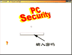
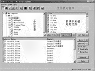
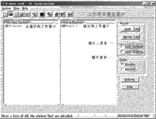
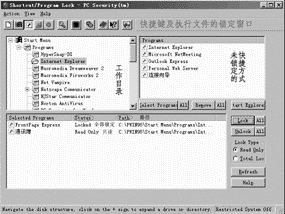
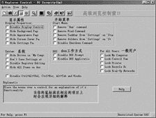
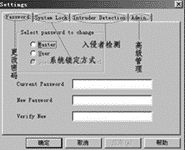

|
|
| 当前位置：电脑报电子版 > 1999 年 > 37 期 > 软件世界 > 安全守护神——PC Security |
| 《 安全守护神——PC Security 》 |
| 计算机的安全使用至关重要，现在，我们就来介绍一款比较实用的计算机保护工具——PC Security。该软件很适合那些共用计算机的用户，例如办公室、电脑机房等。PC Security的功能很多，对于计算机内你所想到的资源，它几乎都可以进行保护，说恰当一些，应该是对电脑的使用权限进行限制。所以，PC Security是计算机使用者理想的安全守护神,《电脑报》1999年第三期12版曾经推荐过该软件。 PC Security对计算机的要求很低，基于386以上芯片的Win95或NT可以正常使用。我们可以在它的网站http://www.tropsoft.com下载，下载文件大小为388KB。 PC Security安装很简单，安装后的大小也没有超过1MB。程序启动后驻留内存，但占用的内存比较少，在日常使用中不会感觉到它对系统的影响。 启动程序，我们可以看到如图1所示的界面，程序要求输入密码进入下一步操作。 程序主界面有三个菜单项，其中“Action”用来操作设置锁定，“View”是功能选项。程序的常用功能可以通过工具栏中的快捷按钮实现。 文件的锁定 所谓文件的锁定，就是将文件进行一种读写保护，当对某个文件进行锁定后，未授权的用户不能对该文件进行读或者写的操作。●进入PC Security后，点击左边的第一个工具按钮进行文件锁定操作。你也可以选择“View”菜单下的“File Lock Brower”选项，进入文件锁定界面，如图2。 ●首先在工作目录区选择硬盘中某个文件目录，然后在文件列表窗口（右上）选择文件，可以点击“All”按钮选择全部文件，选择的文件会列在界面下部的窗口中。 ●在PC Security中，锁定文件的方式有两种，只读锁定（Read Only）和全面锁定（Total Locked）。在“Lock Type”栏中设定文件锁定的方式。 ●选择下部列表窗口中的某个文件，点击“Lock”按钮即可设置该文件锁定，也可以选择锁定了的文件，点击“Unlock”按钮取消锁定。当我们放弃锁定时，可以点击“Remove File”，文件即自动返回到界面右上的文件列表窗口中。设定后，我们可以“Refresh”（刷新），观察选定文件的最终状态。 ●进行文件锁定操作后，我们会发现完全锁定的文件将不能打开，而只读锁定后的文件将不能进行写操作。 窗口的锁定 所谓窗口的锁定，就是当电脑操作者在离开计算机时，将某些重要的窗口锁定，以防止他人的误操作造成不必要的损失。PC Security工具栏的第二个快捷按钮是设置窗口的锁定，也可以通过“View”菜单下的“Windows Lock”项，进入窗口锁定的设置界面，图3。 在窗口锁定的设置窗口中，列出了当前激活的窗口，选择要锁定的窗口，然后点击“Lock”按钮，即可完成窗口的锁定。也可以选择“Lock Taskbar”锁定任务条、“Lock Desktop”锁定桌面。在锁定了任务条和桌面后，鼠标就只能移动而不能操作了。 快捷方式的锁定 我们在Windows下使用最多的很可能是快捷方式了，我们启动程序、打开文件夹的方式，通常是选择桌面或在“开始”菜单中的快捷方式，操作方式和锁定文件的方式类同，并且同样可以选择只读锁定或全部锁定。当然，也可以对可执行文件进行锁定。锁定的文件和快捷方式，将不能启动。PC Security工具栏的第三个按钮为快捷方式的锁定，也可以通过“View”菜单下的选项“Shortcut/Hortcut/Program Lock”进入设置窗口，如图4。  控制设置 PC Security工具栏中的第四个工具按钮是对系统中的某些控制项进行设置，对应的菜单项为“View”菜单下的“Explore Control”（图5）。这项的设置比较复杂，对Windows操作系统的多项内容进行了设置。 其中显示属性设置（Display Properties）可以防治他人改动显示设置，例如隐藏内部背景、墙纸、屏保和外观以及防止修改分辨率等设置项目； 系统（System），可以设置隐藏“我的电脑”中的驱动器、不储存系统的修改设置、不能改动注册表、隐藏桌面图标等； 开始菜单（Start Menu），用来设置禁止“Run”（运行）、“Find”（查找）等功能项，禁止改动任务栏、桌面文档以及关机等； DOS方式，禁止DOS命令和应用； 对于一般用户，可以设置为不能修改计算机内的控制面板、打印机、回收站和拨号网络等。当然，它还可以禁止一些组合快捷键的功能。这些项目如果设置完了，一台电脑就什么都用不了。 特别的限制 最后介绍特别的限制（Restrict System，工具栏第五个按钮）。这项设置功能可以将一部分的执行程序或快捷方式收入限制列表中，你可以随时对这些项目进行限制或取消限制。用户口令 最后，我们来介绍一下PC Security的基本设置，即用户口令、级别的设置。选择“Action”菜单下“Setting”项进入PC Security基本设置窗口（图6）。选择“Password”标签，其中“Master”是设置超级用户口令，而“User”是设置一般用户口令，可分别设定口令。可以设置在系统启动时即要求输入PC Security的使用口令，同样可以设置自动激活程序的时间。对待非法操作者（入侵者），我们可以限制口令输入的次数及警告。另外，为防止其它用户对PC Security的删除，PC Security在解除限制后才能进行反安装，否则将无法直接删除它。 PC Security的主要作用是在公共环境下对计算机进行使用级别限制，我们在使用中除了一些功能上的设置外，可针对不同的用户进行特别的设置。该工具在使用中也存在着一些功能的交叉，但它仍不失为一款好的保护工具。对了，提醒一下，它的一部分功能是需要重新启动后才能设置成功的。 (广东 力娃) |
| 下载本期推荐软件 | 页 首 |
| 《电脑报》版权所有，电脑报网站编辑部设计制作发布 |